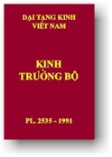

BuddhaSasana Home Page
This document is written in Vietnamese, with Unicode Times
font
|  | Ðại Tạng Kinh Việt Nam Trường Bộ Kinh
|
[các bài kinh với ký hiệu (a) là các bài có kèm thêm bản dịch Anh ngữ]
[Tập I (1-16)] [Tập II (17-34)] Tập I (Kinh số 1-16)
(01) Kinh Phạm võng (Brahmajàla Sutta)
(02) Kinh Sa-môn quả (Sàmanna-Phala Sutta) (a)
(03) Kinh A-ma-trú (Ambattha Sutta)
(04) Kinh Chủng Ðức (Sonadanda Sutta)
(05) Kinh Cứu-la-đàn-đầu (Kutadanta Sutta)
(06) Kinh Ma-ha-li (Mahàli Sutta)
(07) Kinh Cha-li-da (Jàliya Sutta)
(08) Kinh Ca-diếp Sư tử hống (Kassapa-Sìhanàda Sutta) - Kinh Ðại Sư tử hống (Mahà-Sìhanàda Sutta)(09) Kinh Bố-sá-bà-lâu (Potthapàda Sutta)
(10) Kinh Tu-ba (Subha Sutta)
(11) Kinh Kiên cố (Kevaddha Sutta) (a)
(12) Kinh Lô-hi-gia (Lohicca Sutta) (a)
(13) Kinh Tam minh (Tevijja Sutta)
(14) Kinh Ðại bổn (Mahà-Padàna Sutta)
(15) Kinh Ðại duyên (Mahà-Nidàna Sutta) (a)
(16) Kinh Ðại Bát-niết-bàn (Mahà-parinibbàna Sutta) (a)Tập II (Kinh số 17-34)
(17) Kinh Ðại Thiện-kiến vương (Mahà-Sudassana Sutta)
(18) Kinh Xà-ni-sa (Janavasabha Sutta)
(19) Kinh Ðại Ðiền-tôn (Mahà-Govinda Sutta)
(20) Kinh Ðại hội (Mahà-Samaya Sutta) (a)
(21) Kinh Ðế-thích sở vấn (Sakka-panha Sutta) (a)
(22) Kinh Ðại niệm xứ (Mahà-Satipatthàna Sutta) (a)
(23) Kinh Tệ-túc (Pàyàsi Sutta)
(24) Kinh Ba-lê (Pàtika Sutta)
(25) Kinh Ưu-đàm-bà-la Sư tử hống (Udumbarika-Sìhanàdà Sutta)(26) Kinh Chuyển luân thánh vương Sư tử hống (Cakkavatti-Sìhanàda Sutta)
(27) Kinh Khởi thế nhân bổn (Agganana Sutta)
(28) Kinh Tự hoan hỷ (Sampasàdaniya Sutta)
(29) Kinh Thanh tịnh (Pàsàdika Sutta)
(30) Kinh Tướng (Lakkhana Sutta)
(31) Kinh Giáo thọ Thi-ca-la-việt (Singàlovàda Sutta) (a)
(32) Kinh A-sá-nang-chi (Atànàtiya Sutta)
(33) Kinh Phúng tụng (Sangiti Sutta)
(34) Kinh Thập thượng (Dasuttara Sutta)Phụ lục:
(*) Lời giới thiệu, HT Thích Ðức Nhuận.
(*) Bảng đối chiếu Trường Bộ (Nikaya) và Trường A-hàm (Agama).
(*) Học kinh Phật (I): Trường bộ kinh. Thiện Nhựt Huỳnh Hữu Hồng.
Chân thành cám ơn anh HDC và nhóm Phật tử VH đã gửi tặng bản điện tử.
(Bình Anson biên tập, dựa theo bản Anh ngữ "The Long Discourses of the Buddha", Maurice Walshe dịch, 1987).
Chân thành cám ơn các đạo hữu TĐH và NQ đã giúp dò soát và hiệu đính bản vi tính (B. Anson, 04-2004)
Hiệu đính: 10-10-2006